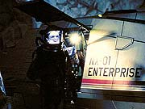
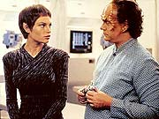
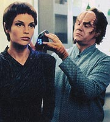
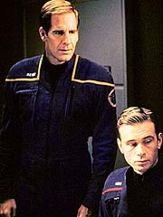
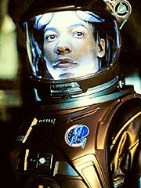
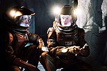
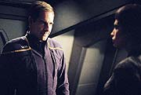
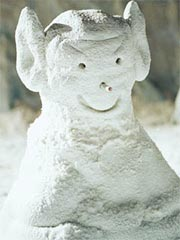
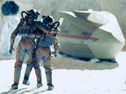

Episódio
anterior | Próximo
episódio
Sinopse:
A Enterprise recebe uma comunicação
da Terra, vinda de uma escola na Irlanda. Alunos do primário
enviaram aos tripulantes alguns desenhos que eles fizeram
inspirados pela exploração espacial, juntamente com algumas
perguntas. Enquanto isso, Archer decide interromper o curso da
nave para estudar um cometa, o maior já visto por humanos ou
Vulcanos.

T'Pol informa que
o interior do cometa possui de eisilium, uma substância rara de
interesse para pesquisadores mas que nunca pôde ser obtida em
grandes quantidades. O material está muito fundo no interior do
objeto, de modo que o único modo de coletar amostras é enviando
um grupo ao local para fazer escavações. Archer designa Malcolm
Reed e Travis Mayweather para levar um shuttlepod até a superfície
do cometa e conduzir as escavações.
Enquanto os oficiais se preparam para partir, uma nave Vulcana se
aproxima da Enterprise. Archer abre comunicações com os alienígenas,
para saber qual é o objetivo deles ali. Quem responde é o capitão
Vanik, da nave Ti'Mur. Ele informa que os Vulcanos estão ali
apenas para observar o estudo conduzido pela Enterprise no cometa.

Incomodado
pela presença dos Vulcanos, Archer pergunta a T'Pol qual pdoeria
ser a verdadeira razão para eles estarem ali. A primeiro-oficial
diz que possivelmente não há segundas intenções por trás das
atitudes Vulcanas, mas Tucker descobre que a própria T'Pol
recebeu uma transmissão criptografada da Ti'Mur.
O engenheiro revela a descoberta a Archer. O capitão pede que
Hoshi Sato decodifique a mensagem. Enquanto isso, a tripulação sênior
da Enterprise (com exceção de Reed e Mayweather, que estão no
cometa, e T'Pol, em seus aposentos) se reúne na ponte para
responder à mensagem enviada da escola irlandesa da Terra.

Depois disso,
Tucker recebe a mensagem decodificada enviada a T'Pol. Hoshi não
se sentiu bem na posição de ler o conteúdo, e entregou a Tucker
o texto original, ainda em Vulcano. O engenheiro alimentou o banco
de dados línguistico da nave para obter uma tradução. Sua
descoberta era de que se tratava de uma carta, de natureza
pessoal, enviada pelos pais do noivo de T'Pol.
Ele descobriu que a primeiro-oficial deveria estar partindo para
Vulcano para se casar, mas havia pedido um adiamento da cerimônia,
para poder continuar servindo na Enterprise. Os pais de seu noivo,
Kas, se sentiram ofendidos e se recusaram a adiar a cerimônia.
Pela tradição Vulcana, T'Pol deveria voltar a seu planeta natal,
se casar e passar ao menos um ano ao lado de seu marido. A
primeiro-oficial enfrenta então um dilema: deixar ou não deixar
a Enterprise.
Tucker revela a Archer que a carta tinha um conteúdo pessoal. O
engenheiro se mostra desconcertado de ter invadido a privacidade
da Vulcana, mas seu capitão recomenda que ele esqueça tudo, já
que não havia passado de um engano. Tucker, entretanto, não se
sente bem com isso e decide que precisa contar a T'Pol o que
aconteceu. Ele o faz, despertando um certo ressentimento por parte
dela.

Enquanto
isso, Archer convida Vanik para um jantar a bordo da Enterprise,
na esperança de que possa agir cordialmente e convencer o Vulcano
a deixar logo a área. O contato entre o Vulcano e os humanos é,
para dizer o mínimo, áspero, criando mais hostilidade em vez de
apaziguar os ânimos. Vanik volta para sua nave, mas a Ti'Mur
permanece nas redondezas.
Na superfície do cometa, Reed e Mayweather plantam um explosivo
para abrir o local da escavação. A explosão abre um buraco no
solo, como previsto, mas oferece um efeito colateral indesejado
--induz o cometa a uma nova rotação. O ponto em que os oficiais
estavam (no pólo e longe da luz direta da estrela) entrará no
campo de iluminação em breve. Como resultado, a superfície
sofrerá rachaduras, ameaçando a sobrevivência da dupla.
Na Enterprise, T'Pol, por recomendação do dr. Phlox, decide
chamar Tucker para conversar, na tentativa de resolver seu dilema.
Ela insiste que seu dever maior é para com sua cultura, enquanto
o engenheiro acha que ela deveria fazer o que achar melhor para
ela. Os dois acabam se desentendendo mais uma vez, mas T'Pol acaba
tocada pelas palavras de Tucker.

Enquanto isso,
Reed e Mayweather se apressam para deixar o cometa. O piloto sofre
uma contusão, o que dificulta a evacuação rápida dos dois. O
chão começa a se quebrar, com a incidência da luz sobre ele, e
o shuttlepod, já com os dois dentro, acaba caindo 18 metros por
uma rachadura, ficando incapacitado de sair por seus próprios
meios. A Enterprise vai ao resgate, tentando erguer o pod com um
cabo, mas fracassa. T'Pol revela a Archer que em breve aquela região
estará novamente escura, e a rachadura era se fechar com o pod
dentro.
Vanik contata a Enterprise e oferece ajuda. Com o raio trator de
sua nave, seria fácil tirar o pod de lá, mas Archer diz que tem
tudo sob controle. Com o tempo se esgotando, T'Pol e Tucker acabam
convencendo o capitão de que será no melhor interesse de sua
tripulação e das relações entre Vulcanos e humanos que ele
aceite a oferta de Vanik. Assim, o pod com Reed e Mayweather é
resgatado. Com o fim da expedição, a Ti'Mur decide deixar a área,
mas T'Pol pede que ela leve uma mensagem a Vulcano, dizendo que
ela decidiu permanecer a bordo da Enterprise.
Comentários:
"Breaking the Ice" é um excelente episódio
de desenvolvimento de personagens, como há muito não se via em Jornada
nas Estrelas. Pela primeira vez o relacionamento entre T'Pol e
Tucker, tenso desde o início da série, recebe a atenção
devida, e o resultado não deixa a desejar.

T'Pol
se mostra aqui em condição de fragilidade --claramente seu convívio
com humanos está afetando sua maneira de ver o mundo. Fossem
outros tempos, a Vulcana não hesitaria em voltar a seu planeta
para o casamento, mas a absorção dos conceitos de livre arbítrio
dos indisciplinados seres da Terra mostrou que talvez seja possível
adotar outro modo de vida.
Também vemos a diferença entre T'Pol e os outros Vulcanos quando
temos a chance de observar ela e Vanik juntos, jantando com Archer
e Tucker. Vanik é o Vulcano padrão de Enterprise até
aqui --pouco afeito à humanidade e a seus métodos, grosseiro e
totalmente descortês. Entretanto, ele mostra que não é um
inimigo para os humanos, apenas que não tem muito interesse neles
ou vontade de conhecê-los.

A caracterização
de Vanik pode ser mais um tiro n'água em uma série que
aparentemente trata os Vulcanos quase como vilões, em vez de
mocinhos, como nos acostumamos a ver nos séculos posteriores.
Entretanto, nada pode estar mais longe da verdade. A caracterização
dos Vulcanos em Enterprise está bem compatível com o que
deveria ser. Vejamos: em primeiro lugar, abandonemos o maniqueísmo.
Nenhuma espécie é boa ou ruim por definição. Cada uma age de
acordo com sua filosofia e seus interesses.
Os Vulcanos têm por norma contatar civilizações quando elas
atingem a capacidade de dobra espacial --justamente para evitar
que eles sofram prematuramente com conflitos espaciais. Essa
atitude paternal pode muitas vezes ser confundida com
"sabotagem", uma vez que os Vulcanos fazem uma tremenda
força para não ajudar ninguém a desenvolver sua tecnologia mais
rápido que o normal. Se dependesse deles, os humanos ainda
estariam confinados ao próprio Sistema Solar no século 22.
Mas se eles estão tão interessados com a segurança de outras
espécies, por que então tratam a humanidade tão mal, como se
fossem inimigos? Na verdade, a posição Vulcana parece ser muito
mais hostil do que é na realidade. O problema é que a maioria
dos Vulcanos simplesmente não sabe como agir de acordo com as
normas de bom comportamento humanas. Seres acostumados à lógica
e à falta de emoções não precisam agir se preocupando em não
ferir sentimentos ou o orgulho alheios.
Vanik ecoa muito bem a filosofia e a psique Vulcanas, sendo
totalmente hostil e antipático, mas ainda assim prestativo e pacífico.
No fundo, a mensagem que está sendo passada é a de que tanto
Vulcanos como humanos terão de aprender muito até poderem
conviver em harmonia. E é esse mesmo conflito que é representado
em microescala por T'Pol e Tucker, a bordo da Enterprise.

O
contato entre os dois --representando a contraposição dos modos
de pensar Vulcano e humano-- é muito fértil, e o resultado
final, com T'Pol adotando a "coisa humana a ser feita" e
abandonando seu casamento, mostra muito bem que os Vulcanos também
têm o que aprender com a humanidade. Para quem viu até agora na
série T'Pol dando um monte de bolas dentro e Archer,
representando a humanidade, cometendo um monte de erros, o
desfecho dessa situação é bastante positivo.
Não que Archer e seus comandados não voltem a cometer das suas
bobagens aqui --quase dois tripulantes são mortos por imperícia
e, depois, por orgulho de seu capitão. Sorte que, como diz
Archer, "sempre há uma nave Vulcana por perto" para
ajudar.
O lado "ação" desse episódio fica limitado ao que
acontece no cometa. Embora o foco maior da história fique para os
relacionamentos a bordo da nave, a porção dedicada à situação
de Reed e Mayweather ajudou a adicionar um pouco de agito (e
efeitos especiais) ao episódio. Apesar de ser incômodo ver dois
tripulantes caminhando sobre um cometa como se a gravidade fosse a
da Terra, de resto, os elementos científicos são muito bem
tratados, adicionando à verossimilhança da série.
Aliás, por falar em verossimilhança, muito interessante e
divertida a cena em que os tripulantes respondem a perguntas
enviadas por estudantes. A sequência é muito boa por vários
motivos. Além de lembrar a uma potencial nova audiência sobre a
premissa da série, serve também para relembrar aos
telespectadores que este programa está cobrindo o meio tempo
entre a exploração espacial atual e a feita por Kirk, Spock e
McCoy. Vale lembrar que é bastante comum astronautas hoje em dia,
tanto no ônibus espacial quanto na Estação Espacial
Internacional (ISS), responderem a perguntas enviadas por alunos.
Uma bela homenagem ao programa espacial atual.
Já a queda do shuttlepod pela rachadura do cometa, apesar de bem
feita, causa um déja vù, depois de termos visto cena semelhante
em "Terra Nova". Se uma
das duas cenas tivesse que ser deletada da história de Jornada,
seria muito melhor excluir a de "Terra
Nova", que não teve propósito algum. Em "Breaking
the Ice" o incidente faz muito mais sentido e dá muito
mais emoção ao segmento. Pena que não tenha sido uma novidade.

No tocante aos
personagens regulares, Phlox teve uma curta mas relevante aparição,
Sato teve uma ligeiramente mais discreta e menos importante e Reed,
embora tenha tido a chance de explodir um cometa, não marcou
forte presença. Mas também não comprometeu. O ponto fraco do
elenco continua sendo Mayweather --apesar de ter tido a chance de
participar ativamente da missão, o pobre piloto continua mais
inexpressivo e idiota do que nunca. Além de ir a um cometa para
construir um boneco de neve, o alferes ainda fez o favor de se
ferir (e olhem que, por sua natureza "espacial", ele
deveria ser o mais adaptado a um ambiente de baixa gravidade) e
colocar as vidas dele e de Reed no processo. O personagem está
seriamente ameaçado, e um episódio que o enfoque decentemente é
urgentemente necessário.
No fim das contas, "Breaking the Ice" consegue
costurar e relacionar várias histórias diferentes, representando
vários planos de realidade. O nome do episódio reflete bem a
tarefa realizada. "Quebrar o gelo" refere-se não só à
óbvia exploração do interior do cometa, mas também das relações
entre T'Pol e Tucker e, num plano mais amplo, entre Vulcanos e
humanos. Nesse último ponto, só faltou alguma referência, por
menor que fosse, ao episódio anterior, "The
Andorian Incident", que sem dúvida deveria ser um
marco nas relações interplanetárias entre Terra, Vulcano e
Andoria.
Citações:
Archer - "You're
up for a little comet walk?"
("Vocês estão a fim de uma pequena caminhada por um
cometa?")
Vanik - "You are a long way from Earth, captain. Are you
lost?"
("Você está bem longe da Terra, capitão. Está
perdido?")
Archer - "There's one from Molly McCook. 'When you flush
the toilet, where does it go?' That sounds like an engineering
question. So I'll ask commander Charles Tcuker, our chief-engineer.
(...) Trip?"
("Aí vem uma de Molly McCook. 'Quando vocês apertam a
descarga, onde isso vai?' Isso parece com uma questão de
engenharia. Então perguntarei ao comandante Charles Tucker, nosso
engenheiro-chefe. (...) Trip?")
Tucker - "Pause it, will ya? (...) A poop question, sir?
Can't I talk about the warp reactor or the transporter?"
("Pause, pode ser? (...) Uma pergunta de cocô, senhor? Não
posso falar sobre o reator de dobra ou o transporte?")
Tucker - "(...) Hold on. They're gonna think I am the
sanitation engineer."
("(...) Pare aí. Eles vão pensar que eu sou o engenheiro
sanitário.")
Archer - "You're doing fine."
("Você está indo bem.")
Tucker - "Did you ever do anything totally by mistake that
you weren't very proud of?"
("Você já fez algo totalmente por engano de que não seja
muito orgulhosa?")
T'Pol - "No."
("Não.")
Tucker - "Did you ever.. come across something that you
thought was one thing, so you reacted in a certain way, but then
it turned out to be something completely different..."
("Você já... viu uma coisa que pensasse que era uma coisa,
e então você reagiu de um certo modo, mas então acabou que era
algo completamente diferente...")
T'Pol - "Your point, commander?"
("Onde quer chegar, comandante?")
Tucker - "I found out about your message from the Vulcan
ship."
("Eu descobri a mensagem que você recebeu da nave Vulcana.")
Archer - "You know, for people who claim not to be
explorers, you sure do get around..."
("Sabe, para pessoas que dizem não ser exploradores, vocês
certamente passeiam bastante...")
Vanik - "I hope our presence here is not proving
inconvenient."
("Espero que nossa presença aqui não esteja sendo
inconveniente.")
Archer - "On the contrary. It is nice to know, no matter
how big the Universe is, there's always a Vulcan ship nearby."
("Pelo contrário. É bom saber que, não importa quão
grande seja o Universo, sempre há uma nave Vulcana por
perto.")
Tucker - "Sound to me like you already made up you mind.
Why the hell did you ask me here?"
("Parece para mim que você já se decidiu. Por que diabos me
chamou aqui?")
T'Pol - "It was a mistake. I apologize."
("Foi um engano. Eu peço desculpas.")
Archer - "What was that all about?"
("O que foi tudo isso?")
Tucker - "It is personal."
("É pessoal.")
Trivia:
 Esse episódio lida com o noivado de T'Pol. A atriz que a
interpreta, Jolene Blalock, comentou a situação mostrada no episódio.
"Sim, ela é noiva. E está lidando com o que fazer, porque
obviamente você não pode ter um relacionamento, emocional or não,
em qualquer espécie, e ter um emprego numa nave estelar. E este
é o dilema. Ela terá de lidar com isso. O casamento será
adiado, T'Pol irá resolvê-lo, ou ela vai ficar com a nave, ou o
quê?"
Esse episódio lida com o noivado de T'Pol. A atriz que a
interpreta, Jolene Blalock, comentou a situação mostrada no episódio.
"Sim, ela é noiva. E está lidando com o que fazer, porque
obviamente você não pode ter um relacionamento, emocional or não,
em qualquer espécie, e ter um emprego numa nave estelar. E este
é o dilema. Ela terá de lidar com isso. O casamento será
adiado, T'Pol irá resolvê-lo, ou ela vai ficar com a nave, ou o
quê?"
Andre Bormanis, que por anos foi consultor científico de Jornada
e agora conquistou uma posição entre os roteiristas da série,
comentou o uso de ciência neste episódio. "Saímos do nosso
curso para acertar com a ciência neste episódio, e isso
realmente ajudou a história", disse.
O episódio marcou a estréia de Maria Jacquemetton e Andre
Jacquemetton como roteiristas de Enterprise. Além disso,
apresentou o retorno de Dennis McCarthy ao comando musical da série.
McCarthy já cria trilhas para Jornada há tempos (entre os
destaques, ele criou a música-tema de Deep Space Nine e a
trilha do filme "Generations"). Em Enterprise
ele já havia musicado o piloto, "Broken
Bow", e o episódio "Strange
New World".
Ficha
técnica:
Escrito por Maria Jacquemetton
& Andre Jacquemetton
Direção de Terry Windell
Exibido em 07/11/2001
Produção: 008
Elenco:
Scott
Bakula como Jonathan Archer
Jolene Blalock como
T'Pol
John Billingsley
como Phlox
Anthony Montgomery
como Travis Mayweather
Connor Trinneer como
Charlie 'Trip' Tucker III
Dominic Keating como
Malcolm Reed
Linda Park como Hoshi Sato
Elenco convidado:
William Utay como capitão Vanik